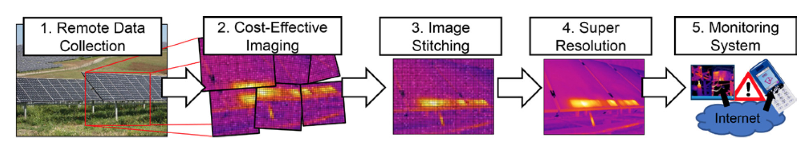

The Intersection of Computer Vision and Green Energy
By 2050, the world will need an estimated 20 terawatts of non-CO2 energy to curb the impending greenhouse gas production crisis. Photovoltaic (PV) solar technologies have the potential to deliver this desperately needed green energy. However, defects on PV panels lead to reduced production of harvested solar energy. Thus, inspection of solar panels is essential in efficient operation of solar panels. However, human analysis is subjective and time consuming made all the more difficult by remote panel locations and the large-scale of PV farms. Automatic methods for defect detection with long-wave infrared thermography (IR) have been proposed, but the existing solutions are costly. This six month project will investigate low-cost IR vision systems for defect detection of PV panels. Novel computer vision algorithms will be developed that will allow utilities to remotely assess the health of panels at quickly at a large-scale.
